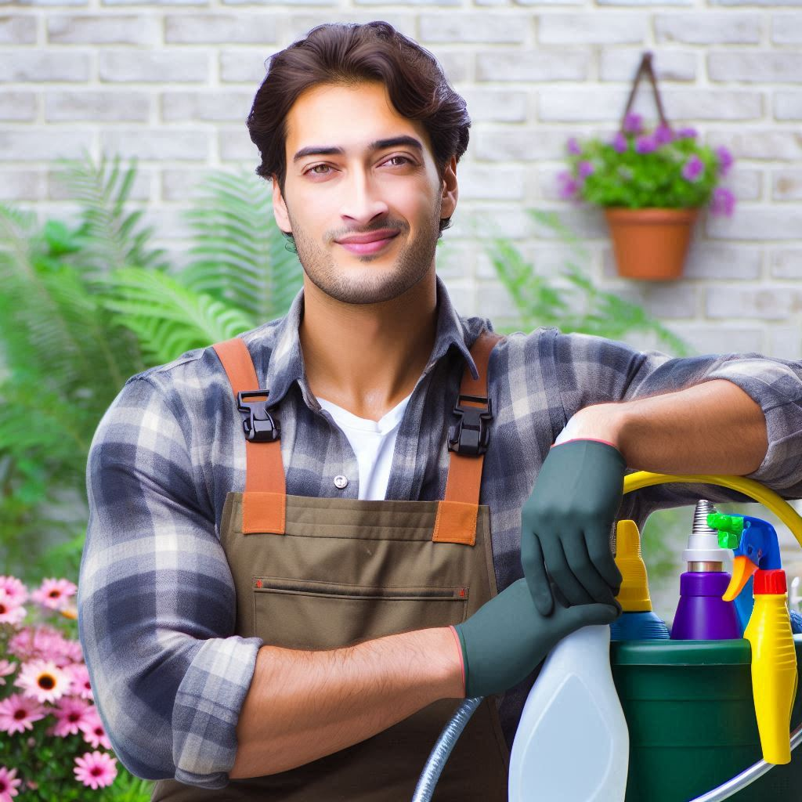

Danniel Suarez - Plomería y Reparaciones de Tuberías
Servicios de plomería para reparar fugas, instalaciones de lavamanos, inodoros, y mantenimiento de calentadores de agua. Estos servicios son esenciales para evitar daños por agua y mantener el sistema de tuberías en buen estado.
Jackeline Alcaráz - Limpieza Profunda y Regular
Servicios de limpieza general, que pueden incluir la desinfección de baños, limpieza de cocina, aspirado de alfombras, y limpieza de ventanas. La limpieza profunda es excelente para hogares que necesitan mantenimiento en áreas difíciles de alcanzar o que requieren una limpieza más detallada.
Diego Duarte - Electricidad y Mantenimiento Eléctrico
Instalación de enchufes, reparación de interruptores, mantenimiento de instalaciones eléctricas, y revisión de sistemas de iluminación. Estos trabajos ayudan a asegurar que el hogar sea seguro y que los sistemas eléctricos funcionen correctamente.
Rocio Acosta - Pintura y Remodelación de Interiores
Servicios de pintura de paredes, techos y puertas, así como pequeñas remodelaciones o mejoras, como el reemplazo de azulejos o el trabajo con molduras decorativas. Son ideales para mantener el hogar fresco y con un estilo renovado.
Ricardo Wash - Jardinería y Paisajismo
Servicios que incluyen el corte de césped, poda de arbustos, instalación de sistemas de riego, y diseño de jardines. Estos servicios ayudan a mejorar la estética exterior y el cuidado de áreas verdes en el hogar.